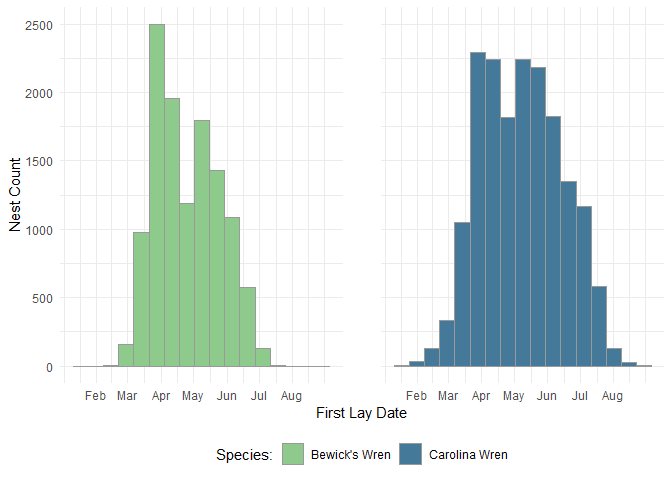

Development Tasks üöß
This repository is in early development with plans to add additional functions create an R package to facilitate accessibility.
- Fix nw.taxaclean to update species codes
- Complete code to estimate first lay date if not provided
- Create “intro” vignette
- Create “clean” vignette
- Create “filter” vignette
Overview üìå
NestWatch is a community science project operated by the Cornell Lab of Ornithology. Since 1965, members of the public have been following a standardized protocol for observing and reporting birds’ nests in the United States and Canada (and more recently, globally). This dataset contains raw nest records submitted to NestWatch. The dataset contains millions of nest check observations from > 648,000 nest attempts (as of January 2024). The purpose of this repository is to provide a collection of functions to aid in accessing and analyzing the wealth of nesting data contained in the NestWatch database.
The metadata paper associated with this dataset (Bailey et al. 2023) is critical for understanding and interpreting data fields and their contents. Details about NestWatch can be found on the project website: http://www.nestwatch.org. This dataset is scheduled for updates annually on or about January 31. Relevant information can also be found on the NestWatch website here: https://nestwatch.org/explore/nestwatch-open-dataset-downloads/.
Installation üíª
Presently, these functions exist in the private engagement-center/2024-NestWatch-Package-Internal GitHub repository. If you have access, clone the repository to your local machine to begin testing. If you do not have access, create a new R Project from the .zip folder provided to you to explore and test the data. We hope to migrate these functions into a package in the future to improve accessibility.
This group of functions primarily uses the R programming language, and some knowledge of R is necessary for using these products. A function in this collection also depends on the program Python, which needs to be installed on your machine prior to use of the function. No prior knowledge of Python or manual setup of the program is needed. Use the following code chunk to check if Python is already installed on your machine:
# Check to see if you already have Python installed
check_python_installation <- function() {
python_installed <- system("python --version", intern = TRUE)
if (length(python_installed) > 0) {
print("Python is installed.")
} else {
message("Python is not installed.")
message("Please download and install Python from https://www.python.org/downloads/")
}
}
check_python_installation()These functions also depend on several R libraries.
# List of packages used in NewstWatch code
packages <- c("reticulate", "dplyr", "stringr", "lubridate", "ebirdst", "sf")
# Check if each package is installed, and if not, install it
for (pkg in packages) {
if (!requireNamespace(pkg, quietly = TRUE)) {
install.packages(pkg)
}
}
# Load required libraries
library(dplyr); library(stringr); library(lubridate); library(ebirdst); library(sf); library(reticulate)Data access üåê
Data from NestWatch is free to access either from the nw.getdata function in R or a direct download from the Mendeley Data Archive or NewstWatch website. NestWatch Open Dataset by Cornell Lab of Ornithology is licensed under CC BY-NC 4.0. We encourage researchers seeking to conduct formal analyses to use these data. As with any dataset, knowing the data structure, understanding the metadata, grasping the data collection protocols, and being aware of the unique aspects of the program are all critical for conducting analyses and interpreting results in ways that provide meaningful insights. Prior to analysis, we encourage all users of NestWtch Data to read the Download Raw NestWatch Data for Analysis article on our website.
Versions üìù
This collection of functions is on Version 0.0, and will be updated to maintain functionality and improve accessibility to the NestWatch datasets.
The NestWatch database is updated annually, by or around 31 January, with the previous year’s nesting records. At this time NestWatch also updates the database with any nest records being archived from other projects. To improve reproducability in NestWatch analyses, each version of the database is archived in Mendeley, and each specific version can be downloaded either using the nw.getdata(version = ) function or by a direct download from the Mendeley archive.
Citation üìñ
If you use the the NestWatch dataset or code please cite it with:
Dataset (replace with appropriate version #): Bailey, R., L. Larson, D. Bonter. 2023. “NestWatch Open Dataset.” Mendeley Data, V1. doi: 10.17632/wjf794z7gc
Data Paper: Bailey, R. L., L. Larson, and D. N. Bonter. 2024. “NestWatch: An Open-Access, Long-Term Data Set on Avian Reproductive Success.” Ecology 105(2): e4230. https://doi.org/10.1002/ecy.4230
NestWatch R Code: Savides, K., R. Bailey, & D. Bonter. NestWatch Data Products (Version 0.00.00) [Computer software]. https://github.com/engagement-center/2024-NestWatch-Package-Internal
Vignettes üìö
For full function documentation, including a series of vignettes covering introductory usage of NestWatch data, please see the RMarkdown Vignettes:
- Introduction to NestWatch Data and Data Access: covers data access, available data products, and introduction to structure and format of data files
- Conducting common NestWatch data cleaning procedures: demonstrates how to when to use a variety of common data cleaning procedures designed for NestWatch data
- Filtering and Estimating values in NestWatch data: demonstrates the use of species-level data filters and functions to estimate missing values
Quick Start üìí
This quick start guide shows demonstrates how to download data and plot the first lay dates of two species. In this guide, and throughout all package documentation, a simplified example dataset is used consisting of Carolina and Bewrick’s wrens.
# Load NestWatch Package
library(nestwatchR)
# Download NestWatch dataset by version
nw.getdata(version = 2)
# Merge the Attempts and Checks files
nw.mergedata(attempts = NW.attempts, checks = NW.checks, output = "merged.data")
nrow(merged.data)
#> [1] 2639824
# Filter the dataset to include just Carolina and Bewick's wrens
wrens <- merged.data %>% filter(Species.Code %in% c("carwre", "bewre"))
nrow(wrens)
#> [1] 40290
head(wrens, 5)
#> X Attempt.ID Location.ID Latitude Longitude Subnational.Code Species.Name Species.Code Year Elevation.m Height.m Substrate Substrate.Relationship Substrate.Other.Description Predator.Guard Predator.Guard.Other Cavity.Entrance.Diameter.cm Entrance.Orientation Habitat.1m Habitat.100m Location.Entry.Technique Observer.ID First.Lay.Date First.Lay.Date.Estimated Visited.During.Egg.Laying Hatch.Date Hatch.Date.Estimated Fledge.Date Fledge.Date.Estimated Young.Fledged Clutch.Size Young.Total Unhatched.Eggs Outcome Attempt.Entry.Technique Visit.ID Visit.Datetime Visit.Time.Valid Nest.Status Adult.Activity Young.Status Management.Status Host.Eggs.Count Host.Eggs.Present.Uncounted Live.Host.Young.Count Live.Host.Young.Present.Uncounted Dead.Host.Young.Count Dead.Host.Young.Present.Uncounted Brood.Parasite.Eggs.Count Brood.Parasite.Eggs.Present.Uncounted Brood.Parasite.Live.Young.Count Brood.Parasite.Live.Young.Present.Uncounted Brood.Parasite.Dead.Young.Count Brood.Parasite.Dead.Young.Present.Uncounted Visit.Entry.Technique
#> 1 A1000045 L56654 34.68472 -98.40583 US-OK Carolina Wren carwre 2006 344.7 1.6002 nesbox in 3.81 ne BIRDHOUSE_HIST:SELF obsr1309 NA NA NA NA NA NA NA NA f S2489482 2006-07-10 00:00:00 0 5 0 NA 0 NA 0 NA 0 NA 0 NA 0
#> 2 A1000045 L56654 34.68472 -98.40583 US-OK Carolina Wren carwre 2006 344.7 1.6002 nesbox in 3.81 ne BIRDHOUSE_HIST:SELF obsr1309 NA NA NA NA NA NA NA NA f S2489483 2006-08-08 00:00:00 0 no nm NA 0 NA 0 NA 0 NA 0 NA 0 NA 0
#> 3 A1000271 L126818 30.61476 -76.87363 US-TX Bewick's Wren bewwre 2006 316.4 1.6154 nesbox in baffle 3.81 sw PointMaker1.0_2 obsr10027 NA NA NA NA NA NA NA NA f6 S2494112 2006-03-16 00:00:00 0 in NA 0 NA 0 NA 0 NA 0 NA 0 NA 0
#> 4 A1000271 L126818 30.61476 -76.87363 US-TX Bewick's Wren bewwre 2006 316.4 1.6154 nesbox in baffle 3.81 sw PointMaker1.0_2 obsr10027 NA NA NA NA NA NA NA NA f6 S2494113 2006-03-13 00:00:00 0 cn NA 0 NA 0 NA 0 NA 0 NA 0 NA 0
#> 5 A1000271 L126818 30.61476 -76.87363 US-TX Bewick's Wren bewwre 2006 316.4 1.6154 nesbox in baffle 3.81 sw PointMaker1.0_2 obsr10027 NA NA NA NA NA NA NA NA f6 S2494114 2006-04-12 00:00:00 0 4 0 NA 0 NA 0 NA 0 NA 0 NA 0
# Format First.Lay.Date as a date
wrens$First.Lay.Date <- as.Date(wrens$First.Lay.Date)
# Filter out NA values of First Lay Date, update all attempt years to 2024
data <- wrens %>% filter(!is.na(First.Lay.Date)) %>%
mutate(First.Lay.Date = update(First.Lay.Date, year = 2024))
# Plot the data in ggplot
library(ggplot2)
ggplot(data, aes(x = First.Lay.Date, fill = Species.Name)) +
geom_histogram(binwidth = 7, alpha = 0.5, position = "stack", color = "black") +
labs(x = "First Lay Date", y = "Count", title = "First Lay Date by Species") +
theme_minimal()